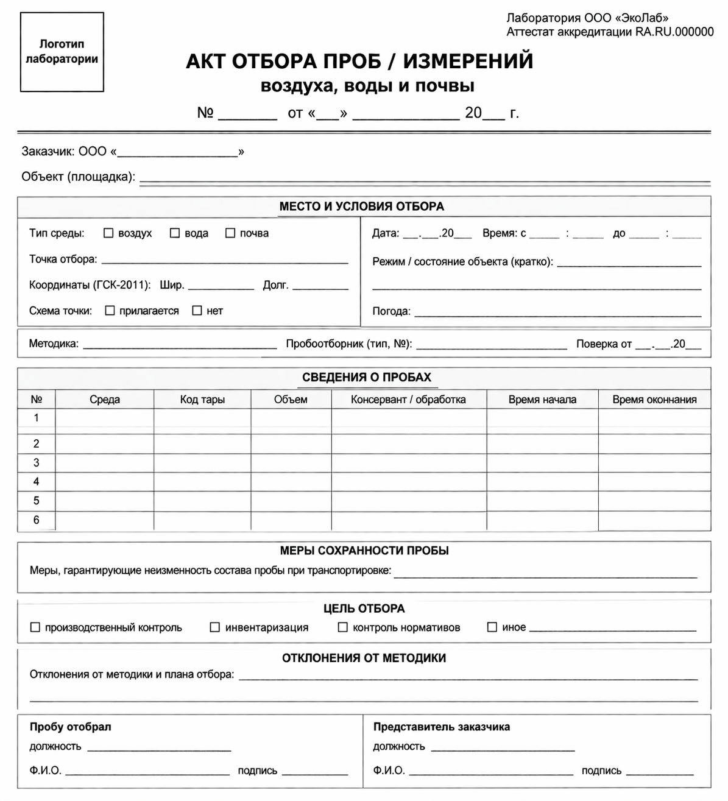

Тренажер по акту отбора проб
0 из 9 блоков заполнены без ошибок
Правила
Нажимайте на нужный блок акта. В задании выберите один или несколько вариантов и нажмите «Проверить». После правильного ответа блок подсветится зеленым.

Нужно выбрать все верные варианты и не выбрать ни одного неверного.
Закрыть
Проверить